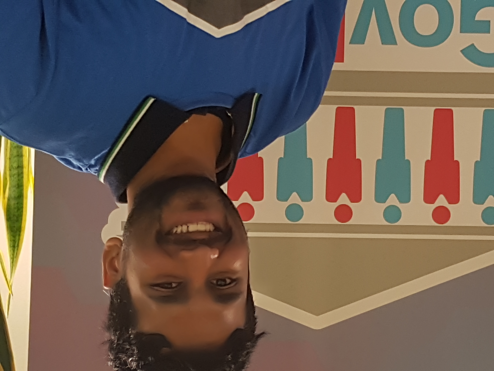
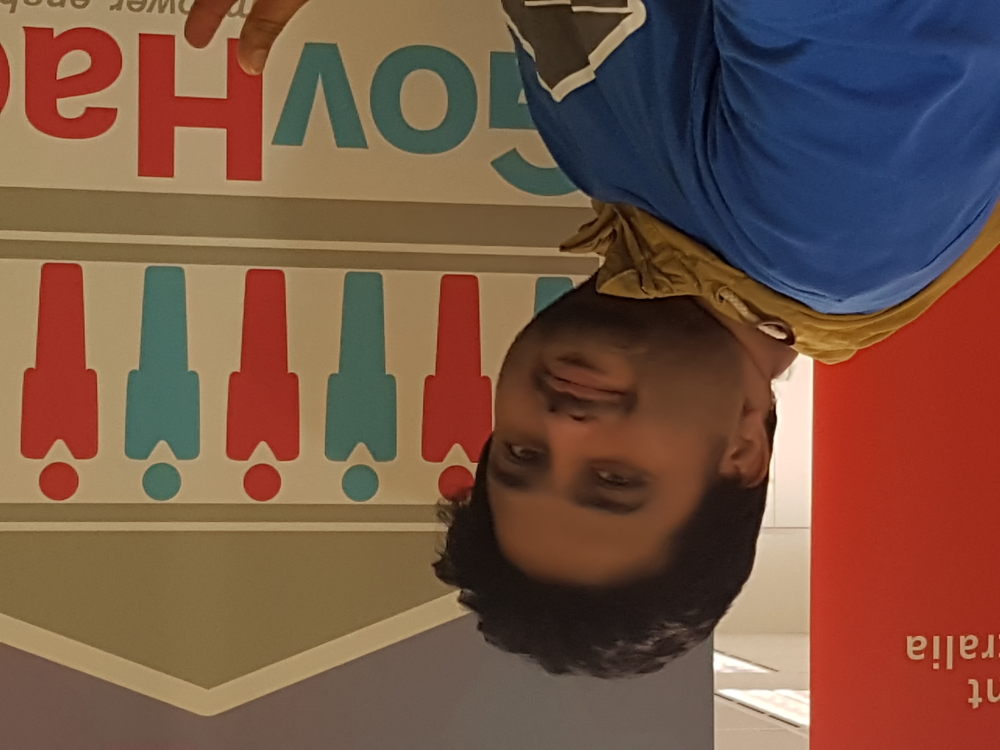

Healthy Hackers
Sri Udakumbura Captain
Passionate about Data
Sravan Rayarapu Application Architect
Love to play with Data and creating Applications

Mohamed Tommy Abdalla Service Specalist
Passionate about helping and coordinating
Kyile Dayman Creative Head
Creative
Muhammad Arbab Tech Savy
Love to meet people and work on new ideas

Rahul Katamneni Data Analyst
Passionate about Data cubes and analytics

Rajesh Dara Senior Creative Developer
Passionate about Development